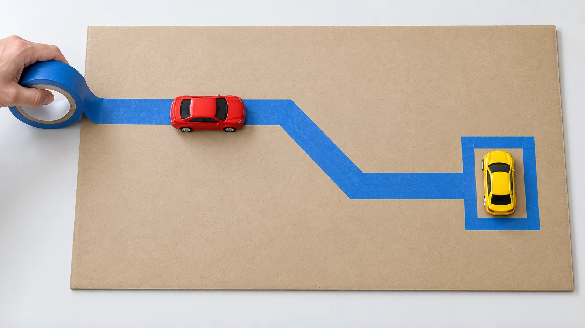

Choose - tape - drive
Painter's Tape Road for Kids
Make one short road and one parking place. The child drives; the adult chooses the surface, handles the tape, and clears it away.
Fit and start
Try it when: your child can push a large toy vehicle and follow a stop cue.
Get: surface-appropriate removable painter's tape chosen by the adult, plus one or two large intact toy vehicles selected for every child who can reach them.
Choose the surface: follow the tape maker's instructions. Test one strip in an inconspicuous area and remove it. If the floor or finish is unknown or unsuitable, use a large cardboard sheet, table, or tray the adult is willing to tape.
- Adult: make one short road and a parking box.
- Child: push one vehicle along the road and park it.
Stop: for peeling, chewing, or wrapping tape; throwing or mouthing vehicles; leaving the activity area; or any change to the surface.

Run one short road
- The adult reads the tape guidance, checks the chosen surface, applies one test strip, and removes it.
- On the selected surface or removable board, the adult lays one broad tape route with one gentle turn.
- Add one parking box at the end. Put one adult-selected vehicle at the start.
- The child pushes the vehicle along the road and into the parking box.
- The adult keeps loose tape out of reach and stays close enough to stop the listed actions or a surface change.
Change one short segment
Keep the same surface, vehicle, starting place, and parking box. The adult moves or adds one short segment, then the child drives the route again. Notice only the visible route change; no engagement or learning outcome is assumed.
First route
Use one gentle turn and a parking box close enough to see from the start.
One change
Add a second turn or move the parking box. Keep the route visible as the same vehicle follows it.
If the road is not working
- The tape lifts
- Stop. The adult removes the loose strip and either follows the product guidance for a different suitable surface or switches to an untaped vehicle route.
- The vehicle does not fit the parking box
- The adult widens the parking box or selects another large intact vehicle that can park inside it.
- The mission is unclear
- Point to the parking box and say, "Drive here." Remove extra vehicles and buildings.
- The route is too complex
- Return to one straight road and one parking box. A city is optional, not the starting requirement.
- The child is done
- End the drive. The adult removes the tape and stores the vehicles; another route is optional.
Keep the same mission in a different space
Small or seated route
Use a table, tray, or large cardboard sheet with one straight road. The child can push the vehicle from a seated position while the adult steadies the removable surface.
Younger child nearby
Select only large intact vehicles appropriate for every child who can reach the setup. Keep the tape roll and loose strips with the adult, and stop if mouthing or throwing begins.
Specific sensory preferences, mobility needs, and assistive-technology requirements were not established by this research. Change the surface, posture, sound, or role with the child in front of you rather than treating an age label as a complete fit decision.
Let the adult close the activity
Park the vehicles and move them out of the work area. The adult removes the tape using the selected product's guidance, checks the surface, gathers every loose strip, and stores the tape and vehicles out of reach.
What this guide knows
Kid Activity Lab built this guide from current public activity references, manufacturer guidance, public parent questions, and editorial synthesis. Kid Activity Lab has not recorded a family test of this setup. Exact duration, mess, comprehension, engagement, enjoyment, independence, learning, repeatability, frustration, surface performance, and safety outcomes are unknown.
The Genius of Play documents a tape track and a table or tray alternative. 3M and FrogTape publish product-specific surface, testing, and removal guidance. Mississippi State Extension documents a masking-tape road as one block-play setup. Those sources do not establish that every tape suits every surface or that the Kid Activity Lab version was used successfully.